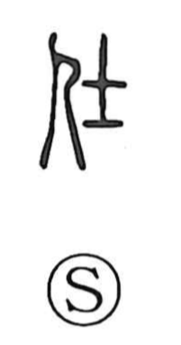

仕

Kun: tsukaeru | On: shi, ji
to serve ・ to do ・ service
Explanation
仕 joins a person, 亻, with 士 as its phonetic. 士 pictures the head of a small ceremonial axe, an emblem of the warrior class and its standing. 仕 is the act of entering service as a person of that rank.
The service is directed to a ruler or superior. 士, 仕, and 事 share a related sound and meaning: the ranked person, his service, and the duties he performs. Those duties belonged to a world in which ceremonies and government were closely connected.
The word broadens to doing one's work or carrying out an assigned task. In Japanese, the character appears widely in words for work and preparing or arranging things.